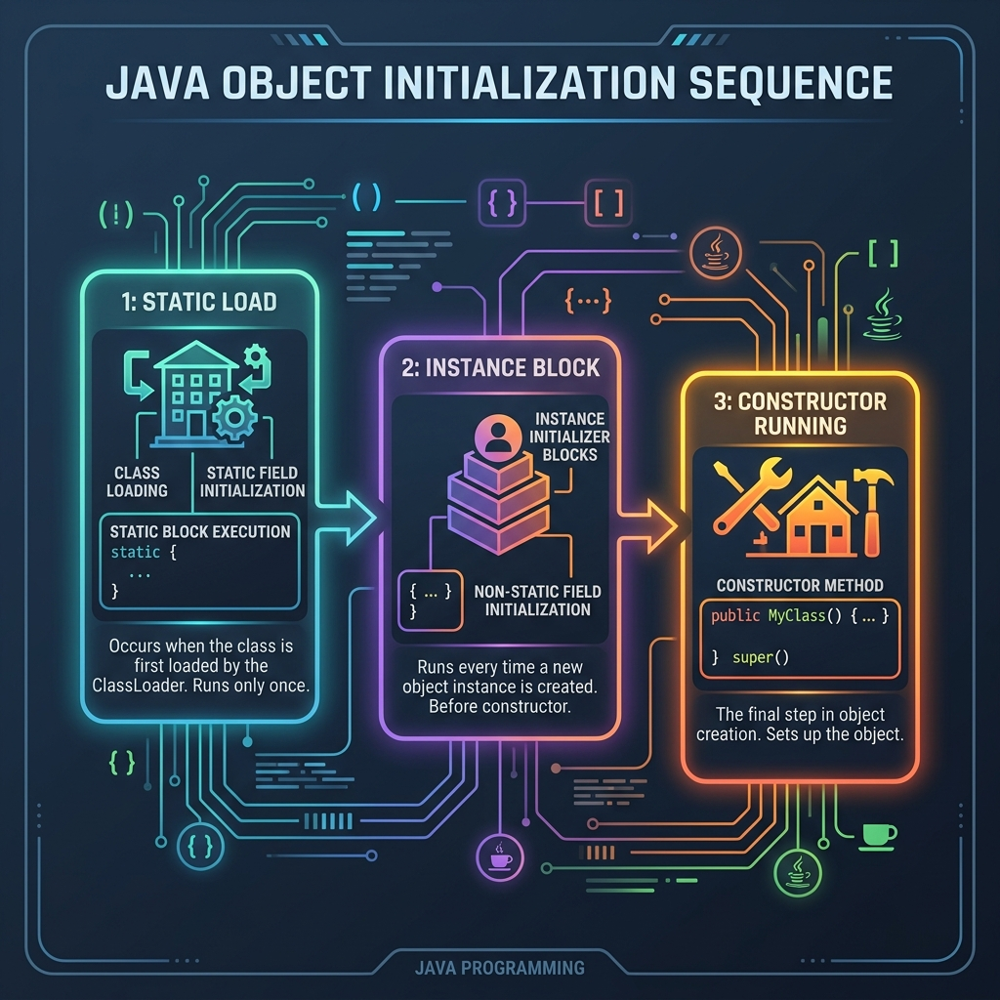

In Java, when you instantiate a child class object (e.g. new Child()), a cascade of static blocks, instance blocks, and constructor calls executes across the parent-child inheritance layout. This sequence is a classic interview favorite and represents how Java guarantees parent state is safe before loading child state.
In this guide, we will trace the exact console output order of an inheritance hierarchy containing static and instance initialization blocks.

Imagine building a massive Sports Complex (Parent) containing a swimming pool center (Child):
- Static Blocks (Foundation): First, the construction crew pours the foundation of the main complex. Then, they lay the pipes for the pool. This only happens once when the center is built.
- Instance Blocks (Guest Arrivals): When a guest walks into the swimming pool: 1. First, they must go through the main complex ticket lobby (Parent instance block). 2. Then, they go into the swimming pool locker room (Child instance block). This happens for every visitor (new instance creation).
1. The Inheritance Code Structure
Let's look at a class layout with static and instance blocks on both Parent and Child classes:
class Parent {
static {
System.out.println("Parent static block");
}
{
System.out.println("Parent instance block");
}
}
class Child extends Parent {
static {
System.out.println("Child static block");
}
{
System.out.println("Child instance block");
}
}
public class MockInterview {
public static void main(String[] args) {
new Child(); // Instantiate Child
}
}2. Tracing the Console Output
When the program executes `new Child()`, here is the exact order of logs printed to the console:
Parent static block— Runs when the Parent class is loaded. Static blocks always run first, starting from the top of the inheritance chain.Child static block— Runs when the Child class is loaded.Parent instance block— Runs because Parent constructor initialization begins. Instance blocks execute right before the constructor body.Child instance block— Runs because Child constructor initialization begins, after the Parent setup finishes.
Conclusion
Java guarantees that:
- All static loads occur first (Parent then Child) once.
- All instance initialization loads occur for every new object (Parent block, then Child block).